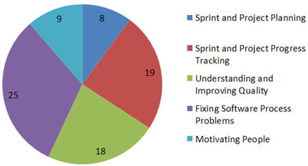
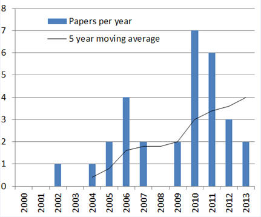
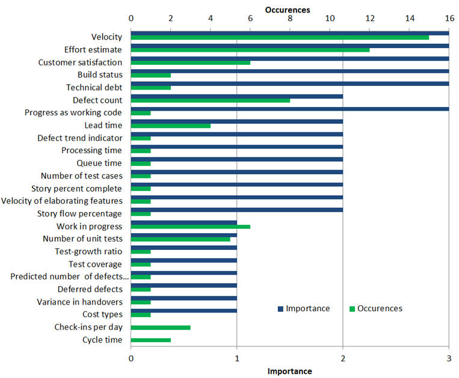

Abstract:
Context: Software industry has widely adopted Agile software
development methods. Agile literature proposes a few key metrics but little is
known of the actual metrics use in Agile teams. Objective: The
objective of this paper is to increase knowledge of the reasons for and effects
of using metrics in industrial Agile development. We focus on the metrics that
Agile teams use, rather than the ones used from outside by software engineering
researchers. In addition, we analyse the influence of the used metrics.
Method: This paper presents a systematic literature review (SLR) on
using metrics in industrial Agile software development. We identified 774
papers, which we reduced to 30 primary studies through our paper selection
process. Results: The results indicate that the reasons for and
the e ects of using metrics are focused on the following areas: sprint planning,
progress tracking, software quality measurement, xing software process problems,
and motivating people. Additionally, we show that although Agile teams use many
metrics suggested in the Agile literature, they also use many custom metrics.
Finally, the most in uential metrics in the primary studies are Velocity and
Effort estimate. Conclusion: The use of metrics in Agile
software development is similar to Traditional software development. Projects
and sprints need to be planned and tracked. Quality needs to be measured.
Problems in the process need to be identified and fixed. Future work should
focus on metrics that had high importance but low prevalence in our study, as
they can offer the largest impact to the software industry.
Summary:
The paper classifies the reasons for using metrics in Lean and Agile software development to five classes. See figure for classes and number of metrics in each

All sources of using metrics in Agile and Lean Software development have appeared after the year 2001.

The most important metrics are Velocity and Effort Estimate. Followed by Customer satisfaction, Build Status and Technical Debt

Reference: Kupiainen, E., Mäntylä M. V., Itkonen J., "Using Metrics in Agile and Lean Software Development - A Systematic Literature Review of Industrial Studies", Information and Software Technology, http://dx.doi.org/10.1016/j.infsof.2015.02.005, (accepted Feb 2015)
Publishers' site of the article (paywall)
Preprint (free)